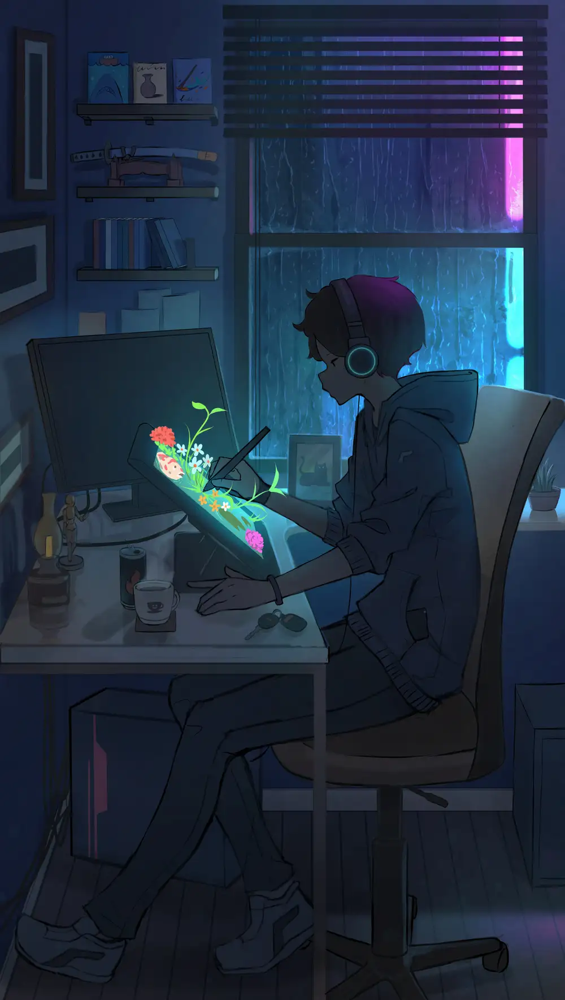

Create,code, and published
Doraemon is a robotic cat that comes from the 22nd century. He comes to 20th century and stays with Nobi Family. The Nobis love Doraemon very much. So Doraemon always help the Nobis with the devices from 22nd century.
Get startfhf
